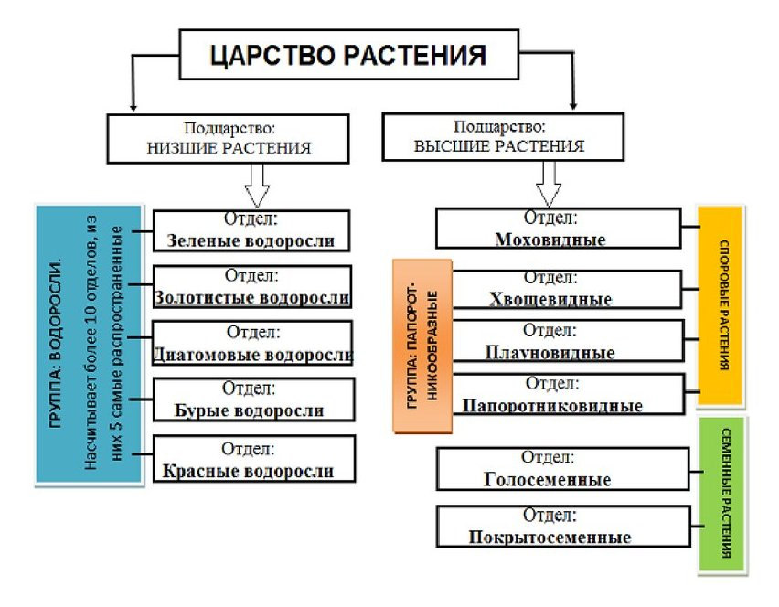

Растения — биологическое царство, одна из основных групп многоклеточных организмов, отличительной чертой представителей которой является способность к фотосинтезу, включающая в себя в том числе мхи, папоротники, хвощи, плауны, голосеменные и цветковые растения. Нередко к растениям относят также все водоросли или некоторые их группы.
Общие признаки растений:
Существование мира животных, включая человека, было бы невозможно без растений, чем и определяется их особая роль в жизни нашей планеты. Из всех организмов только растения и фотосинтезирующие бактерии способны аккумулировать энергию Солнца, создавая при её посредстве органические вещества из веществ неорганических; при этом растения извлекают из атмосферы углекислый газ и выделяют кислород. Именно деятельностью растений была создана атмосфера, содержащая кислород, и их существованием она поддерживается в состоянии, пригодном для дыхания. Растения — основное, определяющее звено в сложной цепи питания всех гетеротрофных организмов, включая человека. Наземные растения образуют степи, луга, леса и другие растительные группировки, создавая ландшафтное разнообразие Земли и бесконечное разнообразие экологических ниш для жизни организмов всех царств. Наконец, при непосредственном участии растений возникла и образуется почва.
